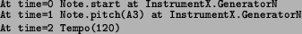

Next: MetriX Up: An Object-Oriented Music Model Previous: Notes
From the previous definition of note it is derived that a Song is defined as the state chart of all Notes present in a musical system (in the case of the conceptually equivalent model of Notes being born and dying on receiving the start/stop message this would rather correspond to the state chart of all the Generators). This definition is very different from its classical equivalent in which a song or musical piece is directly related to its score.
In the object-oriented music model here presented a musical Score must be understood as the sequence of events or messages that will be sent to the different objects present in the musical system. These events, as we already illustrated in figure 6.2, are the result of a supposed interaction between a Performer and an Instrument. As a matter of fact, an event can be sent to a musical Instrument or directly to any of its Generators and as a result it modifies its internal state.
Two different kind of events can be distinguished. Note events are those that through an Instrument or a Generator modify a Note as defined in the previous section. And Global Control Events are those that modify the whole musical system setting parameters such as tempo or key.
A Note Event is made of a Time Statement that specifies when the event is to occur, a Variable that indicates what object (Instrument, Generator...) will receive the event, and any number of pairs Parameter/Parameter Value, where a Parameter specifies what attribute of the object will be modified, and a Parameter Value contains the new value for the given parameter.
Note that, as illustrated in figure 6.7, Note Events are in fact also objects. This fact makes our model somehow similar in this sense to the event-oriented models such as Siren (see section 2.4) from which we have from the very beginning established a clear difference. We also acknowledge the fact that a purely object-oriented model is not incompatible with event-driven behavior. This same conclusion was drawn by the authors of Kyma when they added an event language in version 4.5 (see [Scaletti, 2002]).
An example of a score in pseudo-code would therefore be:

The first line is a note event that indicates that Note at GeneratorN in InstrumentX should start sounding. Note that as no other parameters are set these would be taken as default. In the second line we send another Note event modifying the existing pitch for the previously started Note. Finally in the third line we send a global parameter change that will affect the whole score.
It is interesting to note that, as S. T. Pope points out in [Pope, 2004], most software synthesis systems have some sort of note statement consisting of a keyword, the start time and duration of the event, the Instrument and the parameters of the Instrument. In our model the variable is equivalent to the keyword, the time statement to the start time and the parameter/parameter value pairs to the generic parameters. But there are some differences. A first important difference is that the note event does not necessarily have to address an Instrument as it can address a particular Generator or a whole Instrument section or Instrument. Another important difference is that we do not require a note event to include a duration and this is treated as another regular parameter that may or may not be specified in a note event. This is in fact one of the main limitations of the Music-N model reported by different authors. Miller Puckette, for instance, states in [Puckette, 1991b] that the Music-N model is not well suited to situations in which some aspects of a sound are not defined at its beginning and he adds that those are in fact most of the interesting situations.
2004-10-18